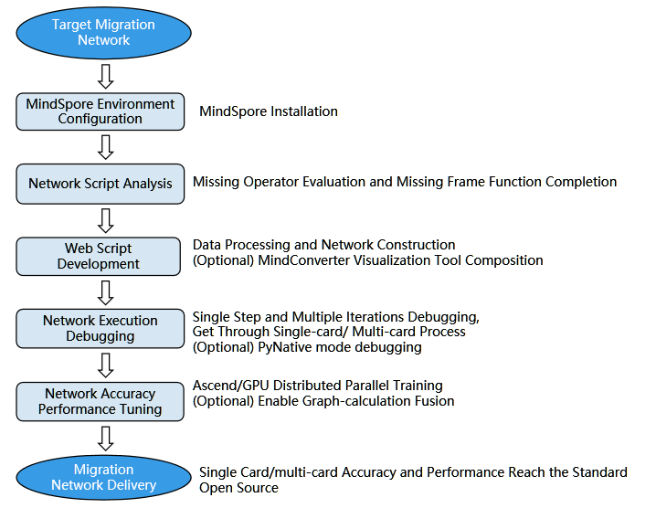

Overview

This migration guide contains the complete steps for migrating neural networks to MindSpore from other machine learning frameworks, mainly PyTorch.
The following figure shows the migration process.:
Configure the MindSpore development environment
Analyze the network model to be migrated and acquire basic data
MindSpore reproduction. It is recommended to use PYNATIVE mode to debug the model during the functional debugging stage and switch to GRAPH mode after the functional debugging is completed. After the model development is completed, it is recommended to reproduce the inference process first and the training process later.
Debugging and tuning for function, precision and performance.
In this process, we have a relatively complete description of each link. We hope that through the migration guide, developers can quickly migrate the existing code of other frameworks to MindSpore.

Environmental Preparation and Information Acquisition
Network migration starts with configuring the MindSpore development environment, and this chapter describes the installation process and knowledge preparation in detail. The knowledge preparation includes a basic introduction to the MindSpore components models and hub, including the purpose, scenarios and usage. There are also tutorials on training on the cloud: using ModelArts to adapt scripts, uploading datasets in OBS, and training online.
Model analysis and preparation
Before doing formal development, some analysis preparation work needs to be done on the network/algorithm to be migrated, including:
Reading papers and reference codes to understand algorithms and network structures
Reproducing the results of the paper, obtaining the base model (ckpt), benchmark accuracy and performance
Analyzing the APIs and functions used in the network.
When migrating networks from PyTorch to MindSpore, users need to be aware of differences from typical PyTorch interfaces.
MindSpore model implementation
After the preliminary analysis preparation, you can develop the new network by using MindSpore. This chapter will introduce the knowledge of MindSpore network construction and the process of training and inference, starting from the basic modules during inference and training, and using one or two examples to illustrate how to build the network in special scenarios.
Debugging and Tuning
This chapter will introduce some methods of debugging and tuning from three aspects: function, precision and performance.
Example of Network Migration Debugging
This chapter contains a complete network migration sample. From the analysis and replication of the benchmark network, it details the steps of script development and precision debugging and tuning, and finally lists the common problems and corresponding optimization methods during the migration process, framework performance issues.
FAQs
This chapter lists the frequently-asked questions and corresponding solutions.